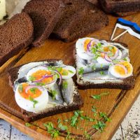
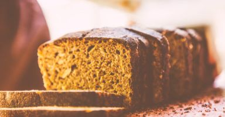

De Esten in het keuken
De Estse keuken is eenvoudig maar voedzaam, met invloeden van zowel de Baltische als de Scandinavische keukens.
Roggebrood (must leib, zie de recept onderaan) met sardienetjes en geookt ei, visgerechten zoals haring, paling, forel, zalm, en gerookte vis,
groenten, aardappelen en zuivelproducten zijn belangrijk in de dagelijkse maaltijden.
Traditionele gerechten zoals Hernesupp (erwtensoep), Piparkook (soort harde peperkoek, wordt gegeten rond Kersttijd)
en Verivorst (bloedworst met veenbessensaus, vaak gegeten tijdens Kerstmis), Kama, een traditioneel dessert gemaakt van gemalen graan worden nog steeds veel gewaardeerd.
Recept voor MUST LEIB


Benodigheden:
Voordeeg:
- Voordeeg: 100-150 g roggebroodstarter
- 1 l warm water
- 400 g middel- of grof gemalen roggemeel
Brooddeeg
- 150 g suiker
- 1 eetlepel zout
- 1 eetlepel komijnzaad
- 1 eetlepel lijnzaad
- 1 dl suikerbietenvlokken of roggevlokken (optioneel)
- 600 g middel- of grof gemalen roggemeel
- 3 eetlepels rogge-moutmeel (optioneel)
Bereidingswijse:
- Meng in een grote aardewerken kom het zuurdesem, water dat aangenaam warm aanvoelt voor de hand, en ongeveer 400 g roggemeel. Meng met een houten lepel tot een glad mengsel – het zou de dikte van dikke zure room moeten hebben. Bedek de deegkom met plasticfolie of een keukendoek en zet het op een warme, tochtvrije plek om te fermenteren.
- Je kunt het voordeeg de avond vóór het bakken of vroeg in de ochtend bereiden. Laat het 8 tot 16 uur rijzen, totdat het voordeeg een aangenaam zure geur heeft en schuimt. Vaak kun je aan de rand van de kom zien dat het deeg langs de zijkanten omhoog is gekomen en weer een beetje is ingezakt. Dit is volkomen normaal.
- Doe 3-4 eetlepels van het voordeeg terug in de zuurdesemcontainer. (NB: Het is niet nodig om de zuurdesemcontainer tussendoor te wassen!).
- Meng nu de suiker, zout, lijnzaad, karwijzaad en de rest van het meel door het voordeeg dat in de kom is achtergebleven. Als je moutmeel gebruikt, voeg dat dan ook toe. Het uiteindelijke deeg is vrij dik en heeft de consistentie van een pap.
- Neem twee broodbakvormen van ongeveer 30 cm lang en vet ze goed in met boter. Gebruik een houten lepel om het deeg in de bakvormen te doen. Meestal maak ik twee broden – één gewone, en bij de andere voeg ik ingrediënten toe naar eigen inzicht. Ik hou vooral van brood met hazelnoten, gedroogde veenbessen en vaak ook rozijnen. Maak met je vinger een paar diepe gaten in het brood – daaraan kun je goed zien hoe het brood rijst.
- Bedek de broden met een schone doek en laat ze opnieuw 2-3 uur rijzen (tot de broden mooi bol zijn geworden en de gaten die je met je vingers hebt gemaakt bijna verdwenen zijn).
- Plaats in een voorverwarmde oven van 250 graden. Verlaag na ongeveer 5 minuten de temperatuur van de oven tot 200 graden en bak het een uur.
- Haal de broodbakvormen uit de oven en draai ze om op een grote houten snijplank. (De stoom die uit het brood komt helpt het brood van de vorm los te komen). Laat het ongeveer tien minuten afkoelen, haal dan het brood uit de vorm en bestrijk de zijkanten met een stuk koude boter voor een glanzende afwerking. Het insmeren met boter helpt ook om de korst zachter te maken.
- Wikkel de broden in bakpapier en laat ze volledig in de vormen afkoelen. NB! De broden blijven nog doorgaren – als je ze warm in plakjes snijdt, blijft het brood klef!
- NB! Houd er rekening mee dat elke oven anders is!